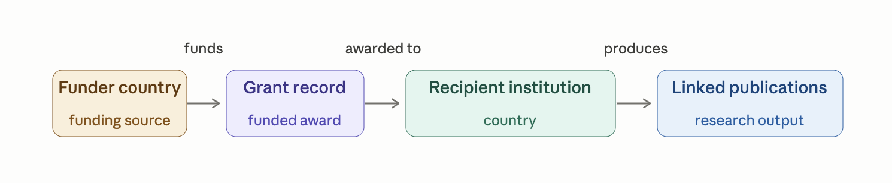
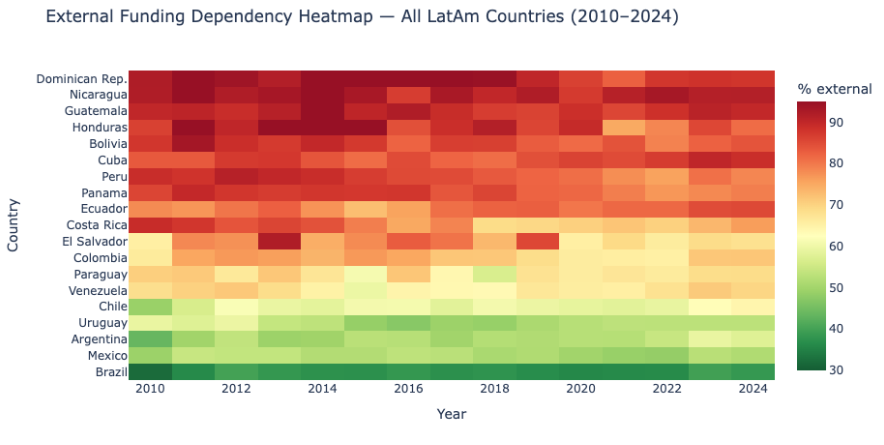

Words / posts / Research Analytics
What the data doesn't show: presenting at CLACSO's funding flows project
I was in Buenos Aires last week for the closing event of Tracking research funding flows in the Global South, a project run by CLACSO in partnership with CWTS/Leiden University and IDRC. I'd been invited to present on Dimensions as a funding data infrastructure - roughly fifteen minutes to explain what we collect, how it's structured, and where we stand on openness.
I came prepared to talk. I left mostly wanting to listen :-)
The question the project is asking
The core research question sounds simple: who funds what, where, in Latin America and beyond? But the fact that this is still a research question - that a multi-year project with serious institutional backing is needed to answer it - says something important about the state of global research infrastructure.
CLACSO represents 927 research and postgraduate centres across 56 countries. The researchers in that room weren't asking theoretical questions. They were asking why the funding landscape of their own region is so hard to see clearly from within it.
That framing stuck with me. Infrastructure is never neutral. What gets counted, and by whom, shapes what gets funded. The project is mapping a terrain that mainstream bibliometrics has largely ignored - not out of malice, but because the tools were built elsewhere and for other purposes.
What Dimensions actually holds
My job was to explain what Dimensions can contribute to that question.
The short version: we hold around 10 million grant records from approximately 800 funders worldwide, linked to 130 million publications and 1.5 billion citations. The linking is the important part - we can trace a grant from the funder through to the papers it produced, across institutions and borders.
For questions about international funding flows specifically, the approach is to query where funder country differs from recipient country. A Canadian grant (say, from IDRC) landing at a Mexican university shows up as an external flow. An EU Horizon grant to a Brazilian institution shows up the same way. In principle, you can build a reasonably detailed picture of how money moves across borders.

We also extract funding acknowledgements from the full text of publications using NLP. This is the second data stream, and it matters because a lot of funding - especially informal, bilateral, or smaller-scale support - never gets registered as a formal grant anywhere. It only appears in the acknowledgements section of a paper. If we can extract those at scale, we can see flows that would otherwise be invisible.
See the notebook Analysing Research Funding in Latin America - A tutorial using the Dimensions Analytics API for more real world examples.
The map has edges
Here's the honest part.
Both data streams have the same structural bias: they see the world through the lens of who's already in the registries and the indexed journals. That means they're reasonably good at capturing flows into Latin America from Northern funders - IDRC, NIH, Gates Foundation, EU Horizon. These organisations register their grants. Their grantees publish in indexed journals.
What we see much less clearly is domestic funding, South-South flows, and the informal support structures that keep a lot of regional science running.

Take Argentina. Over the past couple of years, the CONICET funding crisis has been serious - budget cuts, delays, researchers leaving. Against that backdrop, the question of how much Argentine science now depends on international funders isn't just academic. It matters for policy, for sovereignty, for what gets studied. We can begin to answer that question with Dimensions data. But we can't answer it completely, because the picture gets blurry exactly where domestic and informal flows dominate.
South-South flows - say, a Brazilian agency funding work in Colombia, or African-Latin American scientific partnerships - are largely invisible in the data. Not because they don't exist. Because the infrastructure wasn't built to see them.
See the notebook Latin America Research Funding Patterns- A tutorial using the Dimensions on Google BigQuery for more examples.
What I learned from the feedback
The researchers at this event had been using Dimensions - and pushing it hard. The feedback they gave wasn't the vague kind you get from people who've skimmed the documentation. It was specific. Funder X isn't linked correctly. Country Y's national agency has three different names in the data and they resolve to different entity IDs. The acknowledgement extraction misses a common Portuguese grant number format.
That's the kind of feedback you can only get from people who've actually tried to do real work with the data and hit the edges. It's uncomfortable and it's exactly what you need.
I also found the conversation about openness genuinely refreshing. The panel included colleagues from the Barcelona Declaration on Open Research Information, and there was a real dialogue about what open means in practice - not just in principle.
Dimensions occupies an honest middle position here: we are a commercial company but we've always actively engaged and supported the research community for example by releasing open datasets, or by giving them free access to our database for scientometrics projects.
I came back with a list of things to look at in our funder coverage. I also came back with a clearer sense of why the work matters.
That's not a bad outcome for fifteen minutes of slides.
Thanks to the CLACSO team, IDRC, and CWTS/Leiden University for the invitation. The project homepage is at clacso.org/fundingflows.
Cite this post
Michele Pasin. What the data doesn't show: presenting at CLACSO's funding flows project. Blog post on www.michelepasin.org, 25 April 2026.
Talk back / comments via github